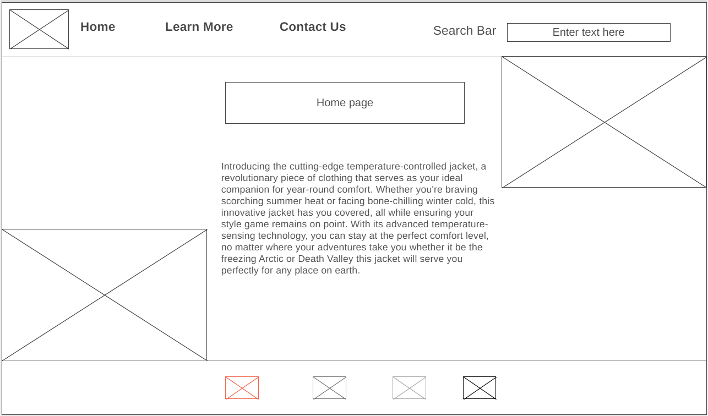

Overview
Purpose
We make jackets that are temperature-controlled. We are a company based out of Idaho. We make jackets to help you feel comfortable all year round. The jackets we make have heaters in the winter and AC in the summer. Think about the last time you were uncomfortably hot outside and there was nothing you could do about it. That is what our product TempSuit prevents. The TempSuit can help you stay cool or warm you up all year round.
Audience
"Welcome to our website, where we cater to a diverse audience. Whether you're an intrepid outdoor enthusiast braving extreme temperature elements, a dedicated outdoor worker, or a fashion Enthusiasts with an eye for innovation, our temperature-controlled jackets have you covered."
Branding
Website Logo
Style Guide
Color Palette
Palette URL: https://coolors.co/396e94-e7c24f-a43312-381d2a-aabd8c| Primary | Secondary | Accent 1 | Accent 2 |
|---|---|---|---|
| [#396E94] | [#E7C24F] | [#A43312] |
Typography
Heading Font: ['Poppins', sans-serif]
Paragraph Font: ['Roboto', sans-serif]
No colored
Introducing the cutting-edge temperature-controlled jacket, a revolutionary piece of clothing that serves as your ideal companion for year-round comfort. Whether you're braving scorching summer heat or facing bone-chilling winter cold, this innovative jacket has you covered, all while ensuring your style game remains on point. With its advanced temperature-sensing technology, you can stay at the perfect comfort level, no matter where your adventures take you whether it be the freezing Arctic or Death Valley this jacket will serve you perfectly for any place on earth.
colored
This remarkable jacket is more than just an outer layer; it's a piece of wearable technology that will transform the way you experience different climates. Let's delve into how this groundbreaking jacket functions. At its core, it constantly monitors the temperature inside the jacket and seamlessly adjusts it to your preferred setting through a user-friendly smartphone app. It's like having your personal climate control system that you can carry with you wherever you go. All you have to do is download our user-friendly app and change the temperature from there.
Navigation
Site Map
Content
Home page
Introducing the cutting-edge temperature-controlled jacket, a revolutionary piece of clothing that serves as your ideal companion for year-round comfort. Whether you're braving scorching summer heat or facing bone-chilling winter cold, this innovative jacket has you covered, all while ensuring your style game remains on point. With its advanced temperature-sensing technology, you can stay at the perfect comfort level, no matter where your adventures take you whether it be the freezing Arctic or Death Valley this jacket will serve you perfectly for any place on earth.
Images for the Home page


Jacket Features and Performance
This remarkable jacket is more than just an outer layer; it's a piece of wearable technology that will transform the way you experience different climates. Let's delve into how this groundbreaking jacket functions. At its core, it constantly monitors the temperature inside the jacket and seamlessly adjusts it to your preferred setting through a user-friendly smartphone app. It's like having your personal climate control system that you can carry with you wherever you go. All you have to do is download our user-friendly app and change the temperature from there.
The jacket is equipped with heating elements, which come to life during those frosty winter nights, providing you with a cozy and warm sensation. Say goodbye to shivering in the cold; this jacket has got you covered. And when the heat is on, a built-in AC system comes to the rescue. It circulates cooling coolant throughout the jacket, delivering that refreshing feeling you usually experience when you step into an air-conditioned haven after enduring 100-degree weather. No more suffering through sweltering days and those cold winter nights.
What makes this jacket even more exceptional is its power source. Discreetly integrated solar panels are artfully woven into the fabric of every thread, ensuring that your jacket remains charged during your outdoor escapades. These panels also serve a dual purpose by helping to insulate against outdoor temperature variations and maintaining a comfortable internal climate. For those who want to go caving or nighttime excursions, you can easily plug it into your wall for an 8-hour charge, making it a versatile and reliable piece of clothing for all your needs.
Images for the Page 2


Explore Our Jacket Collection
To access all these fantastic features and stay updated on the latest technology advancements and jacket styles, all we need from you is your email, first name, last name, and preferred form of payment. We accept PayPal, Venmo, Discover, and Visa, making it convenient for you to complete your purchase securely. If you have any questions or need personalized assistance, don't hesitate to contact us at 000-000-0000, and our experts will be delighted to provide you with the information and support you need at any time 24-7. If having any technical difficulties contact us.
For those who prefer a more personal touch, you can also visit our store located at the North Pole, 1 Street of Santa Lane. Experience the jacket in person and receive hands-on guidance from our knowledgeable staff. We are committed to ensuring that you have the best experience with our temperature-controlled jacket, no matter how you choose to explore it. And if you don’t like to money back guaranteed.
Images for the Page 3


Wireframes
Create three wireframes for your site. One for each page and list them here
Home
Heading Font: ['Poppins', sans-serif] Paragraph Font: ['Roboto', sans-serif] same colors pictures are up above
[Page 2]
Heading Font: ['Poppins', sans-serif] Paragraph Font: ['Roboto', sans-serif] same colors pictures are up above

[Page 3]
Heading Font: ['Poppins', sans-serif] Paragraph Font: ['Roboto', sans-serif] same colors pictures are up above